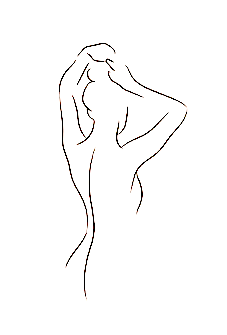

<div class="p-5">
    <div class="row text-center">
        <div class="col-md-6">
            <div class="text-center">
                
            </div> 
        </div>
        <div class="col-md-6">
            <p>Tired of constantly shaving, tweezing, and/or waxing? Sapphira Laser can help you with that! We offer Laser Hair Removal Services which is known to be the most effective solution to getting rid of unwanted hair. At Sapphira Laser we use award winning, SOPRANO ICE LASER from Alma Lasers. Alma Lasers is known for its highest quality equipment in the world today. It is safe and has shown beneficial results on all areas of body including sensitive body parts. The reason why soprano ice is one of the best laser hair removal machine available is due to its advanced cooling technology. As stated on official alma’s website, “ICE™ is an advanced cooling technology that cools the skin during treatment for longer periods of time. The ICE™ tech cold sapphire tip minimizes the risk of burns on the skin surface while maintaining heat within the dermis where hair follicles are treated. Contact Cooling increases patient comfort, making treatments more enjoyable than ever before.”</p>
            <h6>
                How it works?
            </h6>
            <p>Soprano Ice by Alma uses a unique technology which combines Alexandrite 755nm wavelength along with low maintenance of the diode laser. It’s a medical procedure that uses concentrated beam of light (laser) to remove unwanted hair. The exposure to pulses of laser light destroy the hair follicle which will result in no regrowth of hair. Laser hair removal is permanent when the hair is destroyed, when the hair is only damaged, the hair will eventually regrow. This technology only works on dark pigmented hair and is unable to treat grey, white, blonde or any other hair colour other than black.</p>
            <p>Number of treatments varies from person to person. It may take minimum of 6 or more to see results. Although you may require several treatments for long-lasting results, you may see a difference in the thickness of hair after each session. You must be consistent with your treatments in order for you to see long-lasting results. For full face an interval of 4 weeks is recommended in between session and for an interval for 6 weeks is recommended for body. During your initial complimentary consultation, the nurse will explain this more thoroughly including pre-and post-treatment care.</p>
        </div>
    </div>
</div>